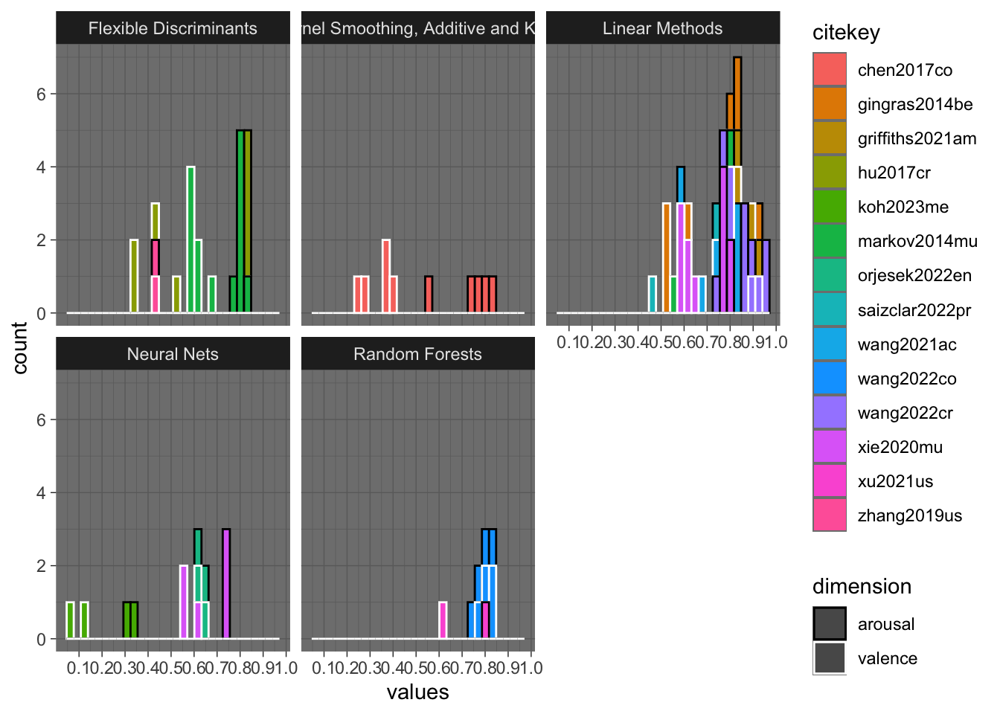
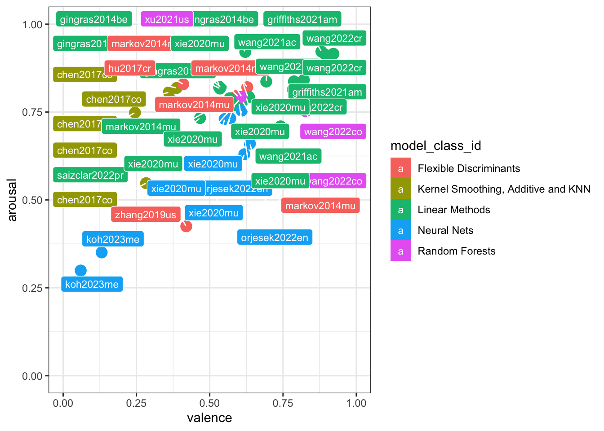
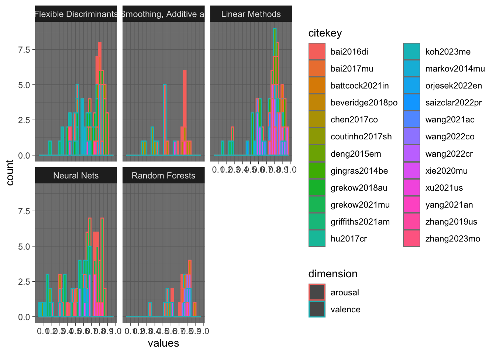
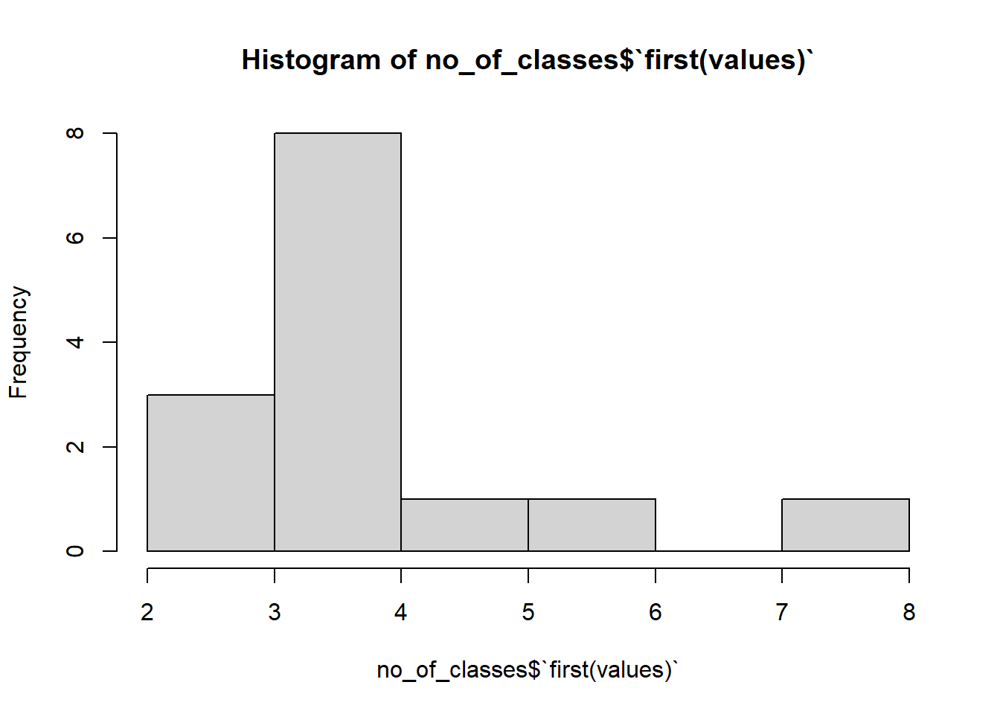
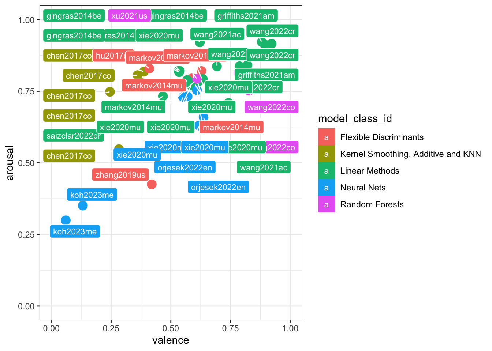
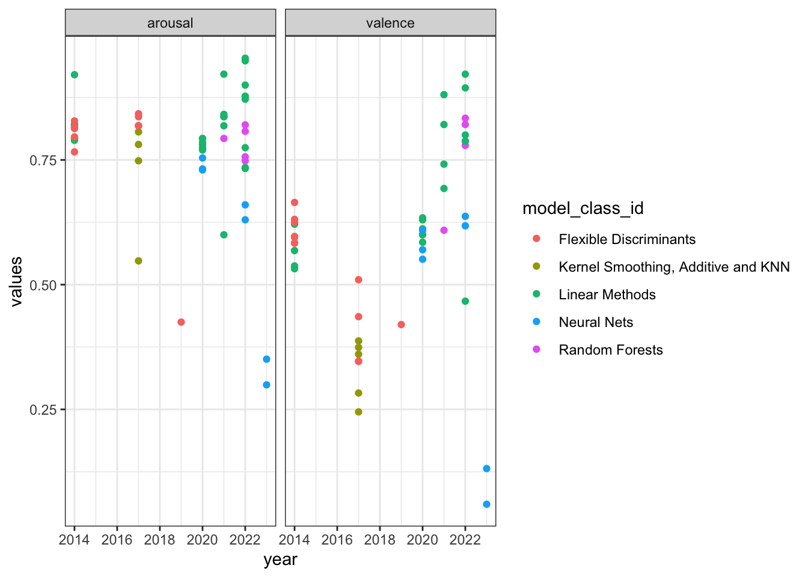

require(here)
source(here::here('R/build-df.R'))
source(here::here('R/format-study-results.R'))
source(here::here('R/parse-model-output.R'))Preprocessing
This assumes that the data has been parsed from the BibTeX files into table and exported as CSV file.
Read annotated data
# get metaMER df:
meta_df <- get_metaMER_df(path_2_studies = here::here('studies'))
# get included studies
included_studies <- meta_df[which(
!stringr::str_detect(meta_df$final_notes, '!EXCL!')),] |>
dplyr::tibble()Recoded
# get studies re-coded (currently identifiable by presence of bind_field.)
recoded_studies <- included_studies[which(stringr::str_detect(
included_studies$model_rate_emotion_values,
'bind_field')),] Add unique identifiers
metaMER_results <-
do.call(
rbind,
lapply(1:nrow(recoded_studies),
function(x) get_study_results(recoded_studies[x,])
)
)
# add unique identifiers
unique_id <- apply(metaMER_results[,c('citekey',
'library_id',
'model_id',
'feature_id',
'data_id',
'experiment_id')],
1,
paste0,
collapse = '-'
)
metaMER_results$unique_id <- stringr::str_remove_all(unique_id,
' ')
metaMER_results <- metaMER_results |> dplyr::select(unique_id,
dplyr::everything())
metaMER_results |> dplyr::tibble()# A tibble: 1,196 × 17
unique_id citekey model_category stimulus_n feature_n participant_n
<chr> <chr> <chr> <chr> <chr> <chr>
1 agarwal2021an-nots… agarwa… classification " ISMIR20… " 'eight… " not specif…
2 agarwal2021an-nots… agarwa… classification " ISMIR20… " 'eight… " not specif…
3 agarwal2021an-nots… agarwa… classification " ISMIR20… " 'eight… " not specif…
4 agarwal2021an-nots… agarwa… classification " ISMIR20… " 'eight… " not specif…
5 agarwal2021an-nots… agarwa… classification " ISMIR20… " 'eight… " not specif…
6 agarwal2021an-nots… agarwa… classification " ISMIR20… " 'eight… " not specif…
7 agarwal2021an-nots… agarwa… classification " ISMIR20… " 'eight… " not specif…
8 agarwal2021an-nots… agarwa… classification " ISMIR20… " 'eight… " not specif…
9 agarwal2021an-nots… agarwa… classification " ISMIR20… " 'eight… " not specif…
10 agarwal2021an-nots… agarwa… classification " ISMIR20… " 'eight… " not specif…
# ℹ 1,186 more rows
# ℹ 11 more variables: feature_source <chr>, feature_reduction_method <chr>,
# library_id <chr>, model_id <chr>, feature_id <chr>, data_id <chr>,
# experiment_id <chr>, dimension <chr>, measure <chr>, statistic <chr>,
# values <dbl>Summarise annotated data (optional)
print(knitr::kable(table(metaMER_results$citekey,metaMER_results$dimension)))
print(knitr::kable(table(metaMER_results$citekey,metaMER_results$model_id)))
print(knitr::kable(table(metaMER_results$citekey,metaMER_results$feature_id)))
print(knitr::kable(table(metaMER_results$citekey,metaMER_results$data_id)))Classify modelling techniques used
# Classify techniques according Hastie, Tibshirani, Friedman (2008)
# https://www.sas.upenn.edu/~fdiebold/NoHesitations/BookAdvanced.pdf
#
library(stringr)
metaMER_results$model_id <- tolower(metaMER_results$model_id)
metaMER_results$model_class_id <- 'Unclassified'
metaMER_results$model_class_id[str_detect(metaMER_results$model_id,'lr|lm|pls|mlr|pcr|logistic regression|2d model full|pentagon|gaussian process regression|sparse bayesian regression|variational bayesian regression|logistic regression|lda|rda|regularized discriminant analysis|reguliarized discriminant analysis')] <- 'Linear Methods' # Class name from Elements of Stat.."
#metaMER_results$model_class_id[str_detect(metaMER_results$model_id,'logistic regression|lda|rda|regularized discriminant analysis|reguliarized discriminant analysis')] <- 'Linear Classification'
#metaMER_results$model_class_id[str_detect(metaMER_results$model_id,'mars|gam')]<-'Additive Trees and Related Methods' #
metaMER_results$model_class_id[str_detect(metaMER_results$model_id,'rbf|gmm|local|polynomial|polygonal|knn|mars|gam')]<-'Kernel Smoothing, Additive and KNN'
#metaMER_results$model_class_id[str_detect(metaMER_results$model_id,'adaboost|gradient')]<-'Boosting'
metaMER_results$model_class_id[str_detect(metaMER_results$model_id,'nn|gru|lstm|ltsm|long short term memory|rprop|mcan')]<-'Neural Nets'
metaMER_results$model_class_id[str_detect(metaMER_results$model_id,'svm|svr|support vector regression|smoreg|smo ')]<-'Flexible Discriminants'
#metaMER_results$model_class_id[str_detect(metaMER_results$model_id,'knn')]<-'Prototype methods'
metaMER_results$model_class_id[str_detect(metaMER_results$model_id,'rf|extremely randomized tree regression|random forest|adaboost|gradient')]<-'Random Forests'
#metaMER_results$model_class_id[str_detect(metaMER_results$model_id,'rf')]<-'Ensemble Learning'Summarise all
print(knitr::kable(table(metaMER_results$model_class_id)))| Var1 | Freq |
|---|---|
| Flexible Discriminants | 371 |
| Kernel Smoothing, Additive and KNN | 106 |
| Linear Methods | 238 |
| Neural Nets | 365 |
| Random Forests | 116 |
print(knitr::kable(table(metaMER_results$model_class_id,metaMER_results$model_category)))| classification | regression | |
|---|---|---|
| Flexible Discriminants | 124 | 247 |
| Kernel Smoothing, Additive and KNN | 0 | 106 |
| Linear Methods | 48 | 190 |
| Neural Nets | 242 | 123 |
| Random Forests | 65 | 51 |
print(paste("We have", nrow(metaMER_results), "observations"))[1] “We have 1196 observations”
print(paste("We have", length(unique(metaMER_results$citekey)), "studies"))[1] “We have 38 studies”
print(paste("Where", length(unique(metaMER_results$citekey[metaMER_results$model_category=='regression'])), "are regression studies"))[1] “Where 26 are regression studies”
print(paste("Where", length(unique(metaMER_results$citekey[metaMER_results$model_category=='classification'])), "are classification studies"))[1] “Where 12 are classification studies”
# note that we have some classification studies that also do regression and vice versa?Pull data to analyse regression studies
R_studies <- dplyr::filter(metaMER_results,model_category=='regression' & str_detect(measure,'r|cc|r2|R2')) #
dim(R_studies)[1] 580 19# eliminate measures that we don't need now
R_studies <- dplyr::filter(R_studies,!str_detect(statistic,'r2-95l|r2-95u|pvalue|upper|lower|sd|null|rmse'))
R_studies <- dplyr::filter(R_studies,!str_detect(measure,'nFeatures|rmse|jensen shannon divergence|accuracy|ccc|vector distance'))
table(R_studies$measure)
cc pcc r r2 R2
2 4 22 168 5 table(R_studies$measure, R_studies$statistic)
adjusted cc globalOptimal localOptimal mean r r2
cc 0 2 0 0 0 0 0
pcc 0 0 0 0 4 0 0
r 0 0 0 0 4 18 0
r2 12 0 4 4 28 0 120
R2 0 0 0 0 5 0 0dim(R_studies)[1] 201 19R_studies$values[R_studies$measure=='R2']<-sqrt(R_studies$values[R_studies$measure=='R2']) # recode R2 into r
R_studies$values[R_studies$measure=='r2']<-sqrt(R_studies$values[R_studies$measure=='r2']) # recode R2 into rHomogenise the outcome variable names to valence and arousal
R_studies$dimension[str_detect(R_studies$dimension,'activation|energy arousal|tension arousal')]<-'arousal'
R_studies$dimension[str_detect(R_studies$dimension,'pleasantness')]<-'valence'
R_studies <- dplyr::filter(R_studies,!str_detect(dimension,'av')) # relates to distances, can be omitted
table(R_studies$dimension)
arousal valence
101 95 table(R_studies$stimulus_n)
1000
16
146
12
1838
10
2372 (subset of PSIC3839, total n: 3839)
2
40
2
420
2
431
4
48
6
54
4
744
18
84
12
emoMusic: 1000, soundtracks: 360, chinese: 500
8
MER60: 60, CH818: 818, AMG1608: 1608
96
study 1: 20; study 2: 40) % three outliers
4 # Deal with four studies involving multiple datasets:
R_studies$stimulus_n[R_studies$stimulus_n==" emoMusic: 1000, soundtracks: 360, chinese: 500 "] <- 938 #resolved from the paper
R_studies$stimulus_n[R_studies$stimulus_n==" 2372 (subset of PSIC3839, total n: 3839) "] <- 2372 # resolved
R_studies$stimulus_n[R_studies$stimulus_n==" study 1: 20; study 2: 40) % three outliers "] <- 40 # decided to take this from validation
# REDO with a clearer function
eliminate <- str_detect(R_studies$unique_id,"hu2017cr") & !str_detect(R_studies$unique_id,"all")
R_studies <- R_studies[!eliminate,]
R_studies$stimulus_n[R_studies$stimulus_n==" MER60: 60, CH818: 818, AMG1608: 1608 "] <- 60+818+1608 #
R_studies$stimulus_n <- as.numeric(R_studies$stimulus_n)Diagnostics
library(ggplot2)Warning: package 'ggplot2' was built under R version 4.3.1g1<-ggplot(R_studies,aes(x=values,fill=citekey,color=dimension))+
geom_histogram()+
facet_wrap(.~model_class_id)+
scale_color_manual(values = c('black','white'))+
theme_dark()+
scale_x_continuous(breaks = seq(0,1,by=.1))
g1`stat_bin()` using `bins = 30`. Pick better value with `binwidth`.Warning: Removed 4 rows containing non-finite outside the scale range
(`stat_bin()`).
Select a summary measure for valence and arousal separately
library(tidyverse)Warning: package 'tidyr' was built under R version 4.3.1Warning: package 'readr' was built under R version 4.3.1Warning: package 'dplyr' was built under R version 4.3.1── Attaching core tidyverse packages ──────────────────────── tidyverse 2.0.0 ──
✔ dplyr 1.1.4 ✔ readr 2.1.5
✔ forcats 1.0.0 ✔ tibble 3.2.1
✔ lubridate 1.9.2 ✔ tidyr 1.3.1
✔ purrr 1.0.2
── Conflicts ────────────────────────────────────────── tidyverse_conflicts() ──
✖ dplyr::filter() masks stats::filter()
✖ dplyr::lag() masks stats::lag()
ℹ Use the conflicted package (<http://conflicted.r-lib.org/>) to force all conflicts to become errorsR_studies$citekey <- factor(R_studies$citekey)
R_studies$dimension <- factor(R_studies$dimension)
R_summary <- summarise(group_by(R_studies,dimension,citekey),valuesMean=mean(values,na.rm=T),valuesMedian=median(values,na.rm=T),valuesMax=max(values,na.rm=T),stimulus_n=first(stimulus_n),studyREF=first(studyREF),model_class_id=first(model_class_id))`summarise()` has grouped output by 'dimension'. You can override using the
`.groups` argument.Visualise Summary on two dimensions
Add variation from within the studies (alternative models)
R_summary_split <- pivot_wider(R_summary,id_cols = citekey, names_from = c(dimension), values_from = valuesMax)
g2 <- ggplot(R_summary_split,aes(x=valence,y=arousal,label=citekey))+
geom_label()+
theme_bw()+
scale_x_continuous(breaks = seq(0,1,by=.1))+
scale_y_continuous(breaks = seq(0,1,by=.1))
g2
## could be more informative when done with the full data
R_studies$citekey<-factor(R_studies$citekey)
R_studies$dimension<-factor(R_studies$dimension)
R_studies_split <- pivot_wider(R_studies,id_cols = c(unique_id,citekey,model_class_id), names_from = c(dimension), values_from = c(values),values_fn = mean)
R_studies_split<-drop_na(R_studies_split)
library(ggrepel)Warning: package 'ggrepel' was built under R version 4.3.1g3 <- ggplot(R_studies_split,aes(x=valence,y=arousal,label=citekey,color=model_class_id,fill=model_class_id))+
geom_point(size=4)+
geom_label_repel(size=3, max.overlaps=50,show.legend = T,color='white')+
scale_x_continuous(breaks = seq(0,1,by=.25),limits = c(0,1))+
scale_y_continuous(breaks = seq(0,1,by=.25),limits = c(0,1))+
theme_bw()
g3
Plot success across the years
# Add year!
R_studies$year <- as.numeric(str_match(R_studies$citekey,'[0-9]+'))
g3 <- ggplot(R_studies,aes(x=year,y=values,colour=model_class_id))+
geom_point(show.legend = T)+
facet_wrap(.~dimension)+
theme_bw()
g3Warning: Removed 4 rows containing missing values or values outside the scale range
(`geom_point()`).
Simple model complexity metric
Ratio of obs./features or just a classification based on feature n (quintiles).
R_studies$feature_n==" 15; 23 in table, but 15 reported " [1] FALSE FALSE FALSE FALSE FALSE FALSE FALSE FALSE FALSE FALSE FALSE FALSE
[13] FALSE FALSE FALSE FALSE FALSE FALSE FALSE FALSE FALSE FALSE FALSE FALSE
[25] FALSE FALSE FALSE FALSE FALSE FALSE FALSE FALSE FALSE FALSE FALSE FALSE
[37] FALSE FALSE FALSE FALSE FALSE FALSE FALSE FALSE FALSE FALSE FALSE FALSE
[49] FALSE FALSE FALSE FALSE FALSE FALSE FALSE FALSE FALSE FALSE FALSE FALSE
[61] FALSE FALSE FALSE FALSE FALSE FALSE FALSE FALSE FALSE FALSE FALSE FALSE
[73] FALSE FALSE FALSE FALSE FALSE FALSE FALSE FALSE FALSE FALSE FALSE FALSE
[85] FALSE FALSE FALSE FALSE FALSE FALSE FALSE FALSE FALSE FALSE FALSE FALSE
[97] FALSE FALSE FALSE FALSE FALSE FALSE FALSE FALSE FALSE FALSE FALSE FALSER_studies$feature_n[R_studies$feature_n==" 15; 23 in table, but 15 reported "] <- 15 #resolved from the paper
R_studies$feature_n[R_studies$feature_n==" 15; 23 in table, but 15 reported "] <- 15 #resolved
R_studies$feature_n[R_studies$feature_n==" before_selection = 45, after_selection = 6 "] <- 45 #resolved
R_studies$feature_n[R_studies$feature_n==" model 1: 52, model 2 = 68, model 3 = 260, model 4 = 388 "] <- 388 #resolved
R_studies$feature_n[R_studies$feature_n==" variable, 557 before feature selection "] <- 557 #resolved
R_studies$feature_n[R_studies$feature_n==" 50 PCA features "] <- 50 #resolved
#R_studies$feature_n[R_studies$feature_n==""] <- 0 #resolved
#R_studies$feature_n[R_studies$feature_n==""] <- 0 #resolved
R_studies$feature_n<-as.numeric(R_studies$feature_n)Warning: NAs introduced by coercionprint(quantile(R_studies$feature_n,c(0.333,0.666),na.rm = T))33.3% 66.6%
18 260 #quantile(R_studies$feature_n,c(0.25,0.50,0.75),na.rm = T)
# Assign
R_studies$feature_n_complexity <- cut(R_studies$feature_n,
breaks = c(0,
as.numeric(quantile(R_studies$feature_n,c(0.333),na.rm = T)),
as.numeric(quantile(R_studies$feature_n,c(0.666),na.rm = T)),
1000),
labels = c("Feature n < 18","Feature n > 18 & < 260","Feature n > 260"))
table(R_studies$feature_n_complexity)
Feature n < 18 Feature n > 18 & < 260 Feature n > 260
26 24 24 Explore feature_n_complexity and model success
Needs to be done from the unsummarised data (R_studies).
tmp <- drop_na(R_studies)
library(ggdist)
tmp$dimension<-str_to_title(tmp$dimension)
tmp$model_class_id<-factor(tmp$model_class_id,
levels = c("Neural Nets","Flexible Discriminants", "Kernel Smoothing, Additive and KNN", "Random Forests","Linear Methods"),
labels = c("Neural\nNets","Flexible\nDiscriminants", "KS\n & KNN", "Random\nForests", "Linear\nMethods"))
g <- ggplot(tmp,aes(x=model_class_id,y=values,color=citekey,label=citekey))+
stat_halfeye(aes(fill=citekey),point_interval="mean_qi", trim=FALSE, expand=FALSE, show.legend = FALSE,adjust = 1.25, density="bounded", point_size=3,scale = 1,alpha=0.5) +
geom_point(alpha=0.5,show.legend = F,position = position_jitter(width = .3))+
#geom_label_repel(size=2,max.overlaps = 50)+
facet_wrap(dimension~feature_n_complexity)+
ylab("Correlation Coefficient")+
xlab("Model Technique")+
# scale_y_continuous(limits = c(0,1),expand = c(0.01,0.01))+
geom_text_repel(aes(x = model_class_id, y = values, label = studyREF),
stat = "summary", fun = mean,show.legend = F)+
theme_bw()
g
#ggsave(filename = 'FeatureN_regression.pdf',g,height = 7,width = 11)Create descriptive table for the manuscript
TR <- NULL
TR$study_n <- length(unique(R_studies$citekey))
TR$model_n <- nrow(R_studies)
t<-table(R_studies$model_class_id)
t2 <- paste0(names(t),': ', as.numeric(t))
TR$model_types_n <- str_c(t2,collapse = "\n")
TR$feature_Desc <- paste0('Min=',min(R_studies$feature_n,na.rm = TRUE),', Md=',median(R_studies$feature_n,na.rm = TRUE),', Max=', max(R_studies$feature_n,na.rm = TRUE))
TR$stimulus_Desc <- paste0('Min=',min(R_studies$stimulus_n,na.rm = TRUE),', Md=',median(R_studies$stimulus_n,na.rm = TRUE),', Max=', max(R_studies$stimulus_n,na.rm = TRUE))
print(TR)$study_n
[1] 14
$model_n
[1] 108
$model_types_n
[1] "Flexible Discriminants: 24\nKernel Smoothing, Additive and KNN: 10\nLinear Methods: 50\nNeural Nets: 14\nRandom Forests: 10"
$feature_Desc
[1] "Min=15, Md=72, Max=557"
$stimulus_Desc
[1] "Min=40, Md=744, Max=2486"Export as csv
write.csv(x = R_studies,file = 'R_studies.csv')
write.csv(x = R_summary,file = 'R_summary.csv')Pull data to analyse classification studies
C_studies <- dplyr::filter(metaMER_results,model_category=='classification' & str_detect(measure,'accuracy|r2|mcc')) #
dim(C_studies)[1] 303 19# eliminate measures that we don't need now
C_studies <- dplyr::filter(C_studies,values>0)
C_studies$statistic[is.na(C_studies$statistic)]<-'Not defined'
C_studies <- dplyr::filter(C_studies,!str_detect(statistic,'pvalue|upper|lower'))
C_studies <- dplyr::filter(C_studies,str_detect(measure,'accuracy|mcc|r2'))
dim(C_studies)[1] 174 19table(C_studies$measure,C_studies$statistic)
mean median Not defined null
accuracy 21 2 40 23
mcc 0 0 32 0
r2 0 0 56 0dim(C_studies)[1] 174 19# Conversion into mcc (==r), do we needHomogenise the outcome variable names to valence and arousal
#C_studies$dimension[str_detect(R_studies$dimension,'activation|energy arousal|tension arousal')]<-'arousal'
#R_studies$dimension[str_detect(R_studies$dimension,'pleasantness')]<-'valence'
#R_studies <- dplyr::filter(R_studies,!str_detect(dimension,'av')) # relates to distances, can be omitted
table(C_studies$stimulus_n)
not specified
48
124
8
171
9
1802
12
300
6
324
52
429; 350 popular songs + 79 songs from the Beatles (Mirex 2009 collection)
2
5192; 12 per user in user validation (not included here due to little information), AcousticBrainz validation: 60000
5
744
4
ISMIR2012: 2886, NJU_V1: 777, Hindi: 1037
18
Specified elsewhere
10 # Deal with four studies involving multiple datasets:
C_studies$stimulus_n[C_studies$stimulus_n==" 429; 350 popular songs + 79 songs from the Beatles (Mirex 2009 collection) "] <- 429 # resolved from the paper
C_studies$stimulus_n[C_studies$stimulus_n==" 5192; 12 per user in user validation (not included here due to little information), AcousticBrainz validation: 60000 "] <- 5192 # resolved
C_studies$stimulus_n[C_studies$stimulus_n==" ISMIR2012: 2886, NJU_V1: 777, Hindi: 1037 "] <- 2886+777+1037 # decided to take this from validation
C_studies<-C_studies[!str_detect(C_studies$stimulus_n,'not specified'),]
C_studies<-C_studies[!str_detect(C_studies$stimulus_n,'Specified elsewhere'),]
C_studies$stimulus_n <- as.numeric(C_studies$stimulus_n)Diagnostics
library(ggplot2)
g1<-ggplot(R_studies,aes(x=values,fill=citekey,color=dimension))+
geom_histogram()+
facet_wrap(.~model_class_id)+
scale_color_manual(values = c('black','white'))+
theme_dark()+
scale_x_continuous(breaks = seq(0,1,by=.1))
g1`stat_bin()` using `bins = 30`. Pick better value with `binwidth`.Warning: Removed 4 rows containing non-finite outside the scale range
(`stat_bin()`).
Select a summary measure for valence and arousal separately
library(tidyverse)
R_studies$citekey <- factor(R_studies$citekey)
R_studies$dimension <- factor(R_studies$dimension)
R_summary <- summarise(group_by(R_studies,dimension,citekey),valuesMean=mean(values,na.rm=T),valuesMedian=median(values,na.rm=T),valuesMax=max(values,na.rm=T),stimulus_n=first(stimulus_n),studyREF=first(studyREF),model_class_id=first(model_class_id))`summarise()` has grouped output by 'dimension'. You can override using the
`.groups` argument.Visualise Summary on two dimensions
Add variation from within the studies (alternative models)
R_summary_split <- pivot_wider(R_summary,id_cols = citekey, names_from = c(dimension), values_from = valuesMax)
g2 <- ggplot(R_summary_split,aes(x=valence,y=arousal,label=citekey))+
geom_label()+
theme_bw()+
scale_x_continuous(breaks = seq(0,1,by=.1))+
scale_y_continuous(breaks = seq(0,1,by=.1))
g2
## could be more informative when done with the full data
R_studies$citekey<-factor(R_studies$citekey)
R_studies$dimension<-factor(R_studies$dimension)
R_studies_split <- pivot_wider(R_studies,id_cols = c(unique_id,citekey,model_class_id), names_from = c(dimension), values_from = c(values),values_fn = mean)
R_studies_split<-drop_na(R_studies_split)
library(ggrepel)
g3 <- ggplot(R_studies_split,aes(x=valence,y=arousal,label=citekey,color=model_class_id,fill=model_class_id))+
geom_point(size=4)+
geom_label_repel(size=3, max.overlaps=50,show.legend = T,color='white')+
scale_x_continuous(breaks = seq(0,1,by=.25),limits = c(0,1))+
scale_y_continuous(breaks = seq(0,1,by=.25),limits = c(0,1))+
theme_bw()
g3
Plot success across the years
# Add year!
R_studies$year <- as.numeric(str_match(R_studies$citekey,'[0-9]+'))
g3 <- ggplot(R_studies,aes(x=year,y=values,colour=model_class_id))+
geom_point(show.legend = T)+
facet_wrap(.~dimension)+
theme_bw()
g3Warning: Removed 4 rows containing missing values or values outside the scale range
(`geom_point()`).
Simple model complexity metric
Ratio of obs./features or just a classification based on feature n (quintiles).
R_studies$feature_n==" 15; 23 in table, but 15 reported " [1] FALSE FALSE FALSE FALSE FALSE FALSE FALSE FALSE FALSE FALSE NA NA
[13] NA NA NA NA NA NA NA NA NA NA FALSE FALSE
[25] FALSE FALSE FALSE FALSE FALSE FALSE FALSE FALSE FALSE FALSE FALSE FALSE
[37] FALSE FALSE FALSE FALSE FALSE FALSE FALSE FALSE FALSE FALSE FALSE FALSE
[49] FALSE FALSE FALSE FALSE FALSE FALSE NA NA NA NA FALSE FALSE
[61] FALSE FALSE FALSE FALSE FALSE FALSE FALSE FALSE FALSE FALSE FALSE FALSE
[73] FALSE FALSE FALSE FALSE FALSE FALSE FALSE FALSE FALSE FALSE FALSE FALSE
[85] FALSE FALSE NA NA NA NA NA NA NA NA NA NA
[97] NA NA NA NA NA NA NA NA FALSE FALSE FALSE FALSER_studies$feature_n[R_studies$feature_n==" 15; 23 in table, but 15 reported "] <- 15 #resolved from the paper
R_studies$feature_n[R_studies$feature_n==" 15; 23 in table, but 15 reported "] <- 15 #resolved
R_studies$feature_n[R_studies$feature_n==" before_selection = 45, after_selection = 6 "] <- 45 #resolved
R_studies$feature_n[R_studies$feature_n==" model 1: 52, model 2 = 68, model 3 = 260, model 4 = 388 "] <- 388 #resolved
R_studies$feature_n[R_studies$feature_n==" variable, 557 before feature selection "] <- 557 #resolved
R_studies$feature_n[R_studies$feature_n==" 50 PCA features "] <- 50 #resolved
#R_studies$feature_n[R_studies$feature_n==""] <- 0 #resolved
#R_studies$feature_n[R_studies$feature_n==""] <- 0 #resolved
R_studies$feature_n<-as.numeric(R_studies$feature_n)
print(quantile(R_studies$feature_n,c(0.333,0.666),na.rm = T))33.3% 66.6%
18 260 #quantile(R_studies$feature_n,c(0.25,0.50,0.75),na.rm = T)
# Assign
R_studies$feature_n_complexity <- cut(R_studies$feature_n,
breaks = c(0,
as.numeric(quantile(R_studies$feature_n,c(0.333),na.rm = T)),
as.numeric(quantile(R_studies$feature_n,c(0.666),na.rm = T)),
1000),
labels = c("Feature n < 18","Feature n > 18 & < 260","Feature n > 260"))
table(R_studies$feature_n_complexity)
Feature n < 18 Feature n > 18 & < 260 Feature n > 260
26 24 24 Explore feature_n_complexity and model success
Needs to be done from the unsummarised data (R_studies).
tmp <- drop_na(R_studies)
library(ggdist)
tmp$dimension<-str_to_title(tmp$dimension)
tmp$model_class_id<-factor(tmp$model_class_id,
levels = c("Neural Nets","Flexible Discriminants", "Kernel Smoothing, Additive and KNN", "Random Forests","Linear Methods"),
labels = c("Neural\nNets","Flexible\nDiscriminants", "KS\n & KNN", "Random\nForests", "Linear\nMethods"))
g <- ggplot(tmp,aes(x=model_class_id,y=values,color=citekey,label=citekey))+
stat_halfeye(aes(fill=citekey),point_interval="mean_qi", trim=FALSE, expand=FALSE, show.legend = FALSE,adjust = 1.25, density="bounded", point_size=3,scale = 1,alpha=0.5) +
geom_point(alpha=0.5,show.legend = F,position = position_jitter(width = .3))+
#geom_label_repel(size=2,max.overlaps = 50)+
facet_wrap(dimension~feature_n_complexity)+
ylab("Correlation Coefficient")+
xlab("Model Technique")+
# scale_y_continuous(limits = c(0,1),expand = c(0.01,0.01))+
geom_text_repel(aes(x = model_class_id, y = values, label = studyREF),
stat = "summary", fun = mean,show.legend = F)+
theme_bw()
g
#ggsave(filename = 'FeatureN_regression.pdf',g,height = 7,width = 11)Create descriptive table for the manuscript
TR <- NULL
TR$study_n <- length(unique(R_studies$citekey))
TR$model_n <- nrow(R_studies)
t<-table(R_studies$model_class_id)
t2 <- paste0(names(t),': ', as.numeric(t))
TR$model_types_n <- str_c(t2,collapse = "\n")
TR$feature_Desc <- paste0('Min=',min(R_studies$feature_n,na.rm = TRUE),', Md=',median(R_studies$feature_n,na.rm = TRUE),', Max=', max(R_studies$feature_n,na.rm = TRUE))
TR$stimulus_Desc <- paste0('Min=',min(R_studies$stimulus_n,na.rm = TRUE),', Md=',median(R_studies$stimulus_n,na.rm = TRUE),', Max=', max(R_studies$stimulus_n,na.rm = TRUE))
print(TR)$study_n
[1] 14
$model_n
[1] 108
$model_types_n
[1] "Flexible Discriminants: 24\nKernel Smoothing, Additive and KNN: 10\nLinear Methods: 50\nNeural Nets: 14\nRandom Forests: 10"
$feature_Desc
[1] "Min=15, Md=72, Max=557"
$stimulus_Desc
[1] "Min=40, Md=744, Max=2486"Export as csv
write.csv(x = R_studies,file = 'R_studies.csv')
write.csv(x = R_summary,file = 'R_summary.csv')